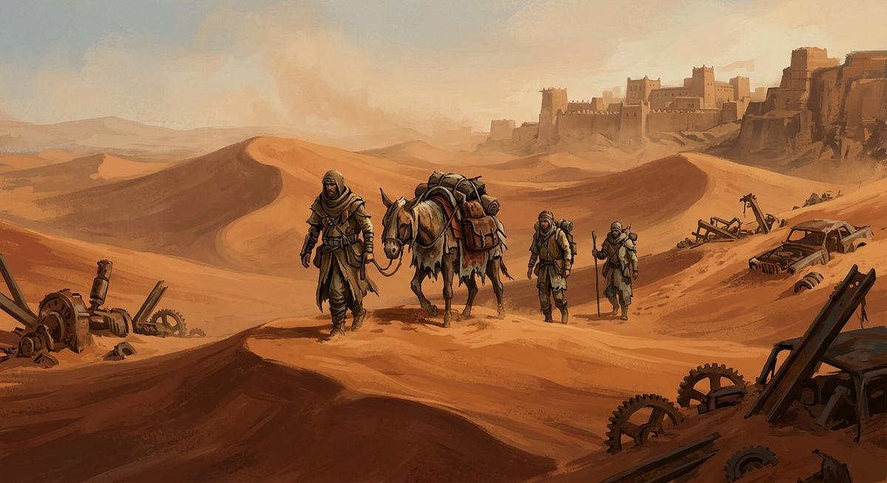

Un désert après la fin du monde. Vous commencez seul, pauvre et faible : achetez bas, vendez haut, engagez des bras, fondez un avant-poste près d'une oasis — et écrivez l'histoire que le désert vous laissera écrire.
Vue isométrique maison · compétences par l'usage · économie à 4 marchés · autosave agressive

Clic gauche : choisir un membre (ou cliquer le sol pour marcher) · clic droit : ordre de marche · E : marché / fouiller / oasis / chantier · Espace pause · T vitesse ×3. Achetez des épices à Corail, vendez-les à Poussière, et souvenez-vous : l'eau coûte plus cher que l'or, un soir sur deux.
| Clic gauche | sélectionner un membre de l'escouade |
| Clic droit | ordre de marche (toute l'escouade) |
| E | ville (marché, taverne) · ruine · oasis · avant-poste |
| 1 2 3 | sélection rapide |
| Espace / T | pause · vitesse ×3 |
| Échap | fermer les panneaux |
Tout le monde à terre = défaite : on vous vole la moitié de l'or et les curiosités, et vous vous réveillez en ville. Rien n'est jamais définitif — c'est le contrat.
Dans Caravanes, aucune fenêtre de talents : vos membres deviennent ce qu'ils font. Huit coups portés → +1 force. Trois marchés → +1 commerce. Un demi-kilomètre de dunes → +1 endurance. La fiche du personnage est la somme de son vécu — comme dans Kenshi, dont le jeu reprend l'esprit sans rien copier d'autre.
Chaque ville a ses penchants : Corail produit des épices et paie cher le fer ; Poussière a faim de viande ; Fer-Sombre vend outils et tissu à prix cassé mais affame les voyageurs ; Braise achète ce que les autres délaissent. Les opinions de faction déplacent les prix : bien vendre à une ville l'adoucit, et elle vous le rend.
| Ville | Faction | Achat intéressant | Vente intéressante |
|---|---|---|---|
| Corail | Villes-Libres | eau (×0,8), épices (×0,7) | tissu, outils |
| Poussière | Guilde Marchande | viande (×0,8) | épices (×1,5), eau |
| Fer-Sombre | Enclave de Fer | tissu (×0,7), outils (×0,7) | eau, pain, viande |
| Braise | Villes-Libres | tissu (×0,8), épices (×0,8) | outils (×1,3), eau |
Exemple mesuré en test : 10 épices achetées 310 or à Corail, revendues 390 à Poussière. Lente mais sûre, la richesse — tant que les pillards vous laissent la route.
Fondez votre camp près d'une oasis : puits (+2 eau/h), ferme (+1 pain/2 h), atelier (+1 outil/4 h), tour de garde (raids allégés). Les chantiers avancent avec le temps de jeu. Et à partir de là, les Pillards du Sable savent que vous existez : raids toutes les 18-30 h. Une base sans défenseurs se fait moissonner — l'or et les récoltes, jamais les murs.
Un membre à 0 PV s'effondre — il ne meurt pas. Il se relève sonné… sauf si tout le monde tombe : alors des marchands sans scrupules vous traînent jusqu'à la ville la plus proche et prélèvent la moitié de l'or et toutes les curiosités. La chronique le note, noir sur blanc, et la caravane repart. C'est le cœur de l'esprit Kenshi : l'histoire se écrit dans les recommencements.
Les captures, l'esclavagisme et les mutilations avec prothèses du dossier sont réservés à la V1 — le MVP les évite volontairement.
Villes-Libres (Corail, Braise) aiment les purgeurs de camps. La Guilde Marchande note chaque transaction. L'Enclave de Fer compte sur qui nettoie ses routes. Les Pillards du Sable n'ont pas d'opinion de vous qui vaille : chaque camp purgé vous fait +8 chez les villes et −12 chez eux — et leurs embuscades s'acharnent d'autant plus sur vos routes.
Opinion haute = achats jusqu'à −22 % et ventes +20 % chez les villes qui vous aiment.
C'est le « spirit » du dossier, assumé : désert ouvert, escouade qui grandit par la pratique, économie entre villes, base à défendre, et une défaite qui raconte au lieu de punir. Mais tout ici est original — Kenshi est un jeu commercial de Lo-Fi Games : le site reprend des mécaniques générales et rien d'autre (pas de noms, pas d'assets, pas de code). Côté open source : Cataclysm DDA (GPL → inspiration survie, concepts uniquement) et Veloren (MIT, étudié pour le gameplay).
C'est le MVP demandé par le dossier : « 1 personnage → escouade de 3 → commerce → base → factions ». La V1 ouvrira jusqu'à 12 membres, avec blessures permanentes et prothèses.
Vous ne « gagnez » pas : vous écrivez une chronique. Les records (or, jours, camps purgés, avant-poste) et le journal des 30 derniers événements sont sauvegardés. Purger les 3 camps, monter une base à 4 bâtiments et survoler 300 or est un honorable chapitre final.
Même arbitrage qu'Arkhantis : la contrainte du site est « statique, tout inline, sans étape de build ». PixiJS serait un fichier de plus à vendor — le canvas 2D isométrique maison fait le travail en quelques centaines de lignes lisibles, et la pédagogie y gagne.
« Autosave agressive », comme le demande le dossier : chaque achat, vente, recrutement, chantier, et une fois toutes les 8 secondes. Vous pouvez fermer l'onglet en pleine tempête de sable.
Non : le temps ne s'arrête que sur les panneaux (marché, chantier, aide). Dans les dunes, il coule — ×1 ou ×3. La soif, elle, ne discute pas.
Open world 3D viking : guildes, chasse, Troll.
☢️ La ZoneSurvie FPS raycasting : anomalies, artefacts, Redout.
🔥 Les Ruines d'ArkhantisHack & slash iso : loot, affixes, Faille du jour.
✝ LOGRES — La Table RondeWargame 3D léger : loyauté, Légitimité, Graal.
🕯 La Confrérie du GrisTactique hexagonale tour par tour.